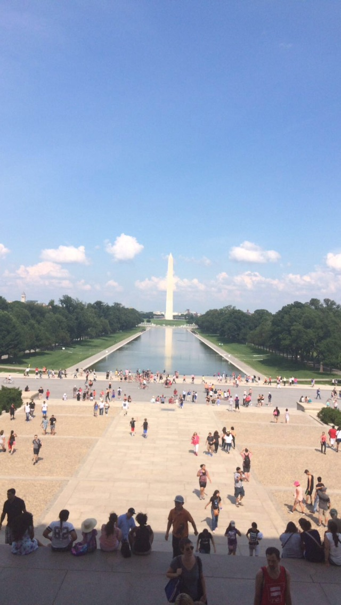
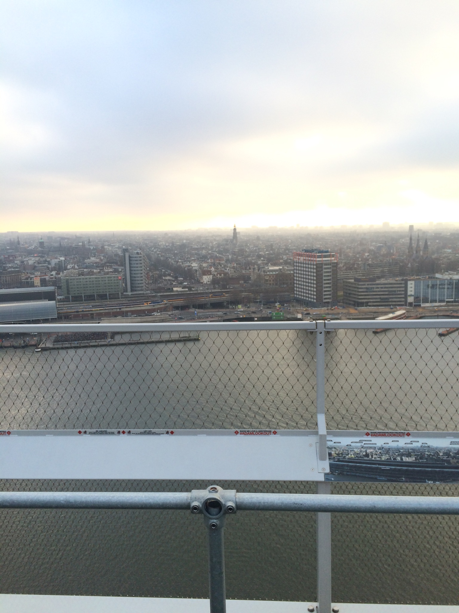
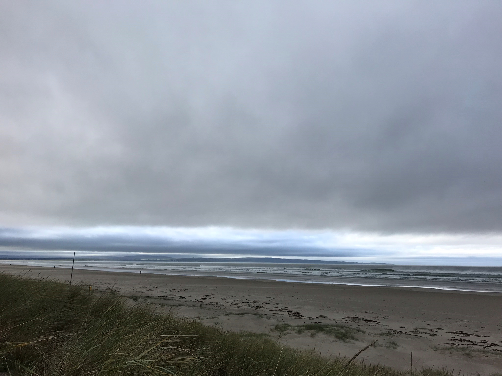
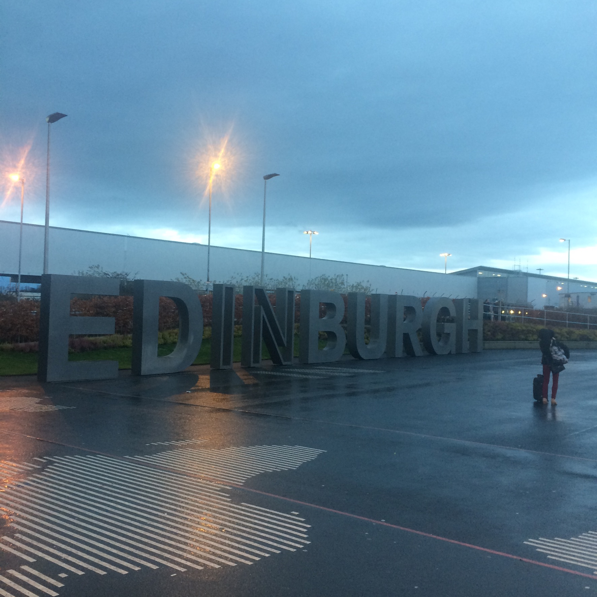

Travel
Travel plays a very important role in our lives as it allows us to experience new cultures and broaden our horizons. I have not lived on this earth all that long, but I have travelled a significant amount. This is a collection of photos I have taken along my Travels.
Washington DC, USA

I took this photo at the Lincoln Memorial in Washington DC in July 2015. I thought this memorial and the War Memorials nearby to be riveting and really opened up my eyes to the impacts of War and the number of deaths it causes.
Lillehammer, Norway

This photo was taken on a skiing trip to Lillehammer in March 2016. Lillehammer hosted the 1994 Winter Olympic Games and the photo I took is of a figure carrying the Olympic Torch etched into a forest area on the opposite side. This was my first skiing trip and was a trip I thoroughly enjoyed and enriched in me the value of travelling as this is not available in Ireland.
Amsterdam, Netherlands

I took this photo of the Amsterdam skyline from the A'Dam Lookout in February 2017. Amsterdam is a very beautiful city and I was massively intrigued by the way in which the city is built with all the different canals running through the city streets. While in Amsterdam I also visited the house of Anne Frank and took a guided tour. It was amazing to learn about the culture that was in place in Amsterdam during the Second World War.
Pau, France

This is a photo of the train station in Pau. Pau is a city in southwestern France. I took this photo in September 2018 when I visited my friend who is living there. I found the architecture of the building to be aesthetically pleasing and highlighted the difference between buildings in different countries and why travel is so important to understand there are so many other cultures in the world which can be hard to forget as we don't see outside our own too often.
Enniscrone, Sligo

This photo was taken on Enniscrone beach and captures both the beach and Killala Bay. My grandparents live in Enniscrone and is such the reason for my travel north. Many a summers I have spent on the beach surfing, making sandcastles and discovering the large sand dunes which run parallel to the beach.
Edinburgh, Scotland

I took this photo at Edinburgh Airport shortly after departing my flight in December 2017. The purpose of my trip was to visit my sister who was studying there. Edinburgh is an amazing city that is very manageable in that it is not too big and everything is within walking distance. From seeing men in kilts playing the bagpipes and seeing the crown jewels in Edinburgh castle the city has it all and is steeped in rich tradition while also maintaining a modern front.